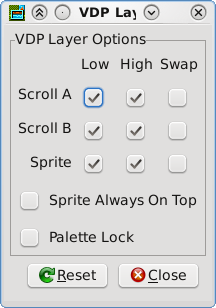

The VDP Layer Options plugin allows you to enable or disable various layers on the Sega Mega Drive's VDP. You can enable or disable the two scroll layers and the sprite layer on a priority-basis (e.g. disable high-priority tiles on Scroll A only, or only low-priority sprites). You can also swap priorities on each layer, so that high-priority tiles on Scroll B are treated as low-priority and vice-versa.
Two other options are provided:
Clicking the "Reset" button will reset the VDP layer options to their default state.